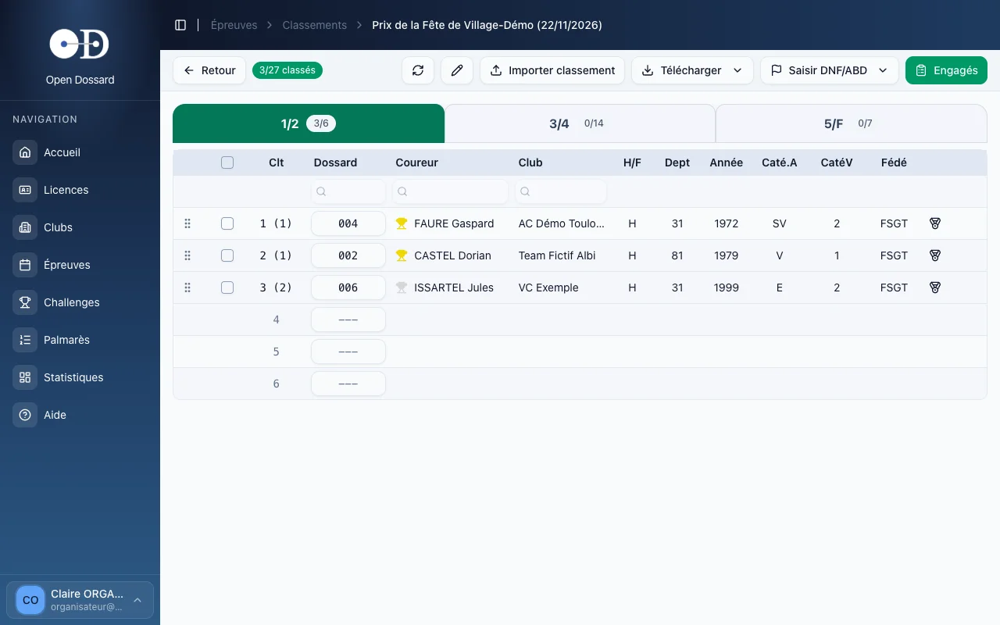
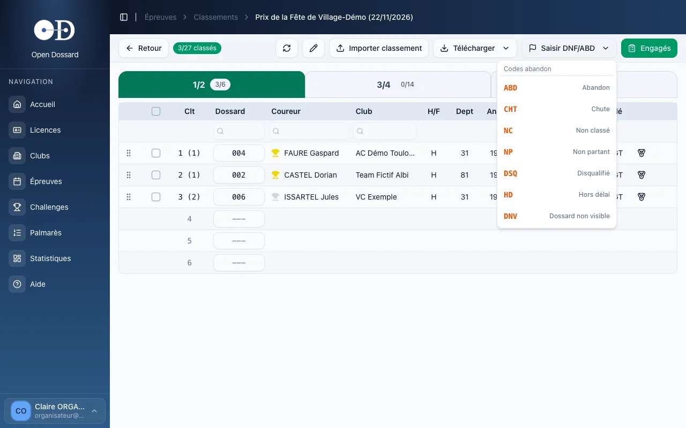
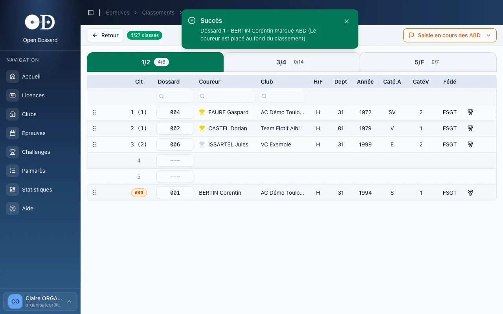
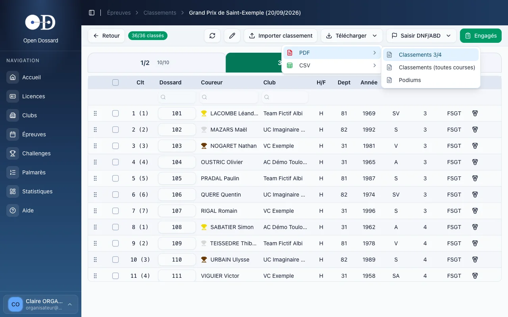

- • Tapez les numéros de dossard dans l'ordre d'arrivée, en validant chacun par Entrée.
- • Les abandons se saisissent à part : choisissez le code (ABD, NP…), puis tapez les dossards concernés.
- • Chaque saisie est enregistrée immédiatement ; les classements s'impriment en PDF pour le speaker.
Ouvrir les classements
Depuis la liste des épreuves, cliquez sur « Classer » (ou sur le nombre de classés) ; depuis l'écran des engagements, cliquez sur Classements. Comme pour les engagements, il y a un onglet par départ, qui affiche le nombre de classés sur le nombre d'engagés (par exemple « 4/6 »).
La saisie des classements est ouverte à tout compte organisateur, même non rattaché au club. Voir aussi Arbitres & commissaires.
Saisir l'ordre d'arrivée
- Choisissez l'onglet du départ.
- Cliquez dans la case Dossard de la première ligne.
- Tapez le numéro du vainqueur et appuyez sur Entrée : le coureur s'affiche et le curseur passe à la ligne suivante.
- Continuez dans l'ordre d'arrivée, dossard après dossard.

- la colonne Clt donne la place au scratch, suivie entre parenthèses de la place dans la catégorie de valeur : « 2 (1) » signifie 2e au scratch et 1er de sa catégorie ;
- les coupes or, argent et bronze signalent le podium de chaque catégorie ;
- Échap annule la frappe en cours, ↓ descend d'une ligne sans valider.
« Le dossard 12 n'existe pas dans les engagés » : le coureur n'est pas engagé sur ce départ. Engagez-le d'abord (bouton Engagés), puis revenez.
« Le dossard 12 est déjà classé en position 5 » : ce dossard a déjà été saisi. Vérifiez votre feuille d'arrivée.
Abandons et autres statuts
- Cliquez sur Saisir DNF/ABD et choisissez le code voulu.
- Le bouton devient orange (« Saisie en cours des ABD ») : tapez le dossard de chaque coureur concerné, suivi de Entrée.
- Chaque coureur est placé au fond du classement avec son code.
- Pour revenir à la saisie normale, rouvrez le bouton et cliquez à nouveau sur le code actif.


Les codes disponibles : ABD abandon, CHT chute, NC non classé, NP non partant, DSQ disqualifié, HD hors délai, DNV dossard non visible.
Corriger un classement
- Inverser deux coureurs : faites glisser une ligne par sa poignée (les six points à gauche) jusqu'à la bonne place.
- Remplacer un dossard : cliquez dans sa case, tapez le bon numéro et validez.
- Retirer des coureurs du classement : cochez-les puis cliquez sur Déclasser. Ils restent engagés et peuvent être saisis à nouveau.
Temps, tours et challenge sprint
Sur une épreuve chronométrée, des colonnes Chrono et Tours s'ajoutent à la grille. L'icône en fin de ligne désigne le vainqueur du challenge sprint ; un second clic le retire.
Importer un classement
Si le classement vient d'un système de chronométrage, utilisez Importer classement avec un fichier CSV à quatre colonnes :
Dossard;Chrono;Tours;Classement
La colonne Classement contient la place, ou un code (ABD, DSQ, NC, NP, CHT) pour les coureurs non classés.
Imprimer les résultats
Le menu Télécharger → PDF propose les classements du départ affiché, ceux de toutes les courses, ou les podiums. Le CSV est aussi disponible.

Le PDF reprend exactement ce qui est affiché à l'écran. Si une autre personne a saisi des arrivées sur un autre appareil, cliquez d'abord sur le bouton de rafraîchissement de la barre d'outils, puis imprimez. Les commissaires et le speaker déclarés sur l'épreuve apparaissent en en-tête.